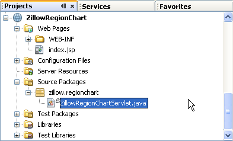

Apache NetBeans
Apache NetBeansJust released!
ПО как услуга: руководство для Zillow
| This tutorial needs a review. You can open a JIRA issue, or edit it in GitHub following these contribution guidelines. |
IDE NetBeans обеспечивает диспетчер веб-служб, поддерживающий приложения модели "программное обеспечение как услуга" (SaaS). Термином "ПО как услуга" описывается модель предоставления программного обеспечения, в рамках которой поставщик ПО разрабатывает веб-приложение и отвечает за размещение и эксплуатацию программного обеспечения в целях использования заказчиками через Интернет. Популярность модели "ПО как услуга" для предоставления функциональности программного обеспечения растет, поскольку она позволяет сократить расходы заказчика и снизить требования к ресурсам оборудования. Среда IDE позволяет разработчикам Java без труда получать доступ ко всем популярным службам, предоставляющим ПО как услуги через сеть.
В этом руководстве показано, как использовать простое ПО, предоставляемое как услуга zillow.com. Zillow.com – компания из Сиэтла, штат Вашингтон, основанная Ричем Бартоном (Rich Barton) и Ллойдом Фринком (Lloyd Frink), бывшими руководящими сотрудниками в корпорации Майкрософт и основателями Expedia. Zillow позволяет пользователям узнать стоимость миллионов домов во всех уголках США, как выставленных, так и не выставленных на продажу. Помимо предоставления оценок стоимости домов, она предлагает несколько уникальных функций, включая оценку изменения стоимости каждого дома за определенный промежуток времени (т. е., 1, 5 или 10 лет), виды домов с воздуха и цены на дома в округе. Когда Zillow может получить доступ к соответствующим данным, она также предоставляет основную информацию о домах, включая площадь, число комнат и число ванных комнат. Пользователи могут также получать текущие оценки стоимости домов, в случае внесения существенных изменений.
В этом руководстве мы создадим диаграмму, отображающую средние цены на дома в определенном регионе США за 12 месяцев. Для этого сперва следует использовать диспетчер служб для вставки операции ZillowRealEstateService.GetRegionChart в сервлет. Среда IDE обеспечивает базовую инфраструктуру, но код сервлета необходимо будет модифицировать для извлечения URL-адреса региональной диаграммы. Данное руководство показывает, как использовать объекты JAXB для извлечения URL-адреса. Это простейший подход.

Figure 1. Содержимое этой страницы применимо к IDE NetBeans 7.2, 7.3, 7.4 и 8.0
Для работы с этим учебным курсом требуется следующее программное обеспечение и ресурсы.
| Программное обеспечение или материал | Требуемая версия |
|---|---|
Пакетная загрузка Java EE |
|
версия 7 или 8 |
|
Веб-сервер или сервер приложений, совместимый с Java EE |
Веб-сервер Tomcat 7.x-8.x, GlassFish Server Open Source Edition 3.1.x, 4.x или Oracle WebLogic Server 11g-12c Важно! Для работы с сервером Tomcat в рамках данного учебного курса изучите статью NetBeans об использовании сервера Tomcat с REST |
Регистрация для получения ключа интерфейса API Zillow
Службы Zillow используют проверку подлинности с помощью ключа интерфейса API. Зарегистрируйтесь в Zillow здесь для получения ключа интерфейса API. Необходимо будет заполнить регистрационную форму, но сама регистрация бесплатна.
Другие службы проверяют подлинность с помощью проверки подлинности HTTP, подписи заголовков или входа пользователей в систему. Эти механизмы будут освещены в разрабатываемых руководствах.
Создание сервлета
Среда IDE позволяет вставлять операции типа "ПО как услуга" в сервлеты, существующие службы RESTful, страницы JSP или простые объекты Java (POJO). В этом руководстве мы создадим веб-приложение с сервлетом.
Для создания сервлета:
-
Выберите команду "Файл" > "Новый проект". В области "Категории" выберите "Java Web". В области "Проекты" выберите "Веб-приложение" и нажмите кнопку "Далее".
-
В поле Project Name ("Имя проекта") введите
ZillowRegionChart. -
Выберите сервер GlassFish или Tomcat и Java EE 6 или EE 7. Прощелкайте остающиеся параметры и нажмите кнопку Finish ("Готово").
-
Щелкните правой кнопкой мыши узел проекта ZillowRegionChart и выберите Properties ("Свойства") из окна контекстного меню. Откроется диалоговое окно Project Properties ("Свойства проекта").
-
Щелкните правой кнопкой мыши узел проекта и выберите в меню "Создать" пункт "Сервлет". Откроется мастер создания сервлетов. image::images/new-zillow-servlet.png[title="Мастер создания сервлетов с ZillowRegionChartServlet"]
-
Назовите сервлет ZillowRegionChartServlet. Создайте для него произвольный пакет, скажем zillow.regionchart. Сохраните все прочие параметры по умолчанию и нажмите кнопку Finish ("Готово").
Сервлет откроется во вкладке редактора, и сервлет с его родительским пакетом станут видимы в представлении Projects ("Проекты"), в узле Source Packages ("Пакеты исходного кода") проекта.

Figure 2. Вкладка 'Проекты' в среде IDE, на которой отображается новый сервлет
Добавление операции GetRegionChart Zillow к сервлету
Использование диспетчера служб для добавления функции "ПО как услуга" Zillow к сервлету. Среда IDE позволяет не волноваться об инфраструктуре.
Для добавления операции GetRegionChart:
-
Откройте вкладку Services ("Службы") в среде IDE. Разверните узел Web Services ("Веб-службы"). Перейдите к операции Zillow GetRegionChart. image::images/z-llow-getregionchart.png[title="Вкладка 'Службы' с развернутыми узлами 'Веб-службы' и Zillow"]
-
В редакторе, найдите метод processRequest в ZillowRegionChartServlet.java. Добавьте пустую строку в начале блока try. Перетащите операцию getRegionChart в блок try processRequest().
-
Откроется диалоговое окно Customize GET SaaS ("Настройка GET для ПО как услуги"). Можно ввести реальные значения города, штата США и почтового индекса, либо оставить их значения неопределенными. (При оставлении неопределенных значений будет выдана диаграмма цен на дома для всей страны). Нажмите кнопку "ОК".
Среда IDE создаст код для функции GET службы "ПО как услуги". По выполнении этого, метод processRequest() будет выглядеть следующим образом.

Figure 3. Код сервлета, в котором отображается вставленный блок try getRegionChart
Среда IDE также создаст два новых пакета, org.netbeans.saas и org.netbeans.saas.zillow , содержащие соединение RESTful и относящиеся к Zillow классы, соответственно. Полная структура пакета приведена ниже. Среда IDE также импортирует в сервлет классы RestConnection и ZillowRealEstateService .

Figure 4. Полная структура проекта ZillowRegionChart
Добавление ключа интерфейса API к проекту
Чтобы проект мог получить доступ к службам Zillow, необходимо передать ему ключ интерфейса API, полученный при регистрации. Откройте файл zillowrealestateserviceauthenticator.properties и скопируйте в него ключа интерфейса API из письма, присланного Zillow в ответ на регистрацию.
Модификация сервлета для возвращения графического представления диаграммы
Созданный сервлет пока не выдает никаких полезных выходных данных. Чтобы в браузере появилась собственно региональная диаграмма, необходимо извлечь URL-адрес диаграммы из String, возвращаемой службой Zillow в форме файла XML. Один из вариантов здесь – выполнить анализ файла XML и передать найденный URL-адрес странице JSР. Этот подход описан в статье Адама Миатта (Adam Myatt) +Consuming Zillow Web Services ("Использование веб-служб Zillow") + на сайте NetBeans Zone. В этом руководстве мы используем более простой подход, основанный на объектах JAXB.
*Для возвращения графического представления диаграммы выполните следующие действия: *
-
Измените выдаваемую строку
//out.println("The SaasService returned: "+result.getDataAsString());. Удалите комментарий к строке и измените ее, чтобы она выдавала тег HTML <img> вместо текста. Обратите внимание – она должна быть вне кавычек, которые окружат URL-адрес. Строка теперь выглядит следующим образом:
out.println("<img src=\""+result.getDataAsString() + "\" />");-
Переместите выдаваемую строку внутрь блока
ifв конце. Блокifтеперь выглядит следующим образом:
if (result.getDataAsObject(zillow.realestateservice.regionchart.Regionchart.class) instanceof
zillow.realestateservice.regionchart.Regionchart) {
zillow.realestateservice.regionchart.Regionchart resultObj = result.getDataAsObject(zillow.realestateservice.regionchart.Regionchart.class);
out.println("<img src=\"" + result.getDataAsString() + "\" />");
}-
Замените метод
result.getDataAsString()в выводе наresultObj.getResponse().getUrl(). С помощью автозавершения кодаgetResponse()можно выбирать из различных методовresultObj, после чего использовать автозавершение кода для выбораgetUrl()из методовgetResponse. image::images/zillow-getresponse-cc.png[title="В редакторе отображается завершение кода для методов resultObj"] -
Измените блок catch, чтобы он перехватывал
JAXBExceptionвместоException. Также можно использовать методLogger.getLogger(…)вместо распечатки трассировки стека. Соответствующие классы нужно будет импортировать. Посмотрим, можно ли использовать автозавершение кода и действие контекстного меню Fix Imports ("Исправить импортированные") для воспроизведения следующего блока catch:
} catch (JAXBException ex) {
Logger.getLogger(ZillowRegionChartServlet.class.getName()).log(Level.SEVERE, null, ex);
}-
Удалите закомментированный раздел вывода из родительского блока try в коде servlet.
Теперь в код внесены все необходимые изменения. Окончательный вариант кода сервлета выглядит так:
package zillow.regionchart;
import java.io.IOException;
import java.io.PrintWriter;
import java.util.logging.Level;
import java.util.logging.Logger;
import javax.servlet.ServletException;
import javax.servlet.http.HttpServlet;
import javax.servlet.http.HttpServletRequest;
import javax.servlet.http.HttpServletResponse;
import javax.xml.bind.JAXBException;
import org.netbeans.saas.zillow.ZillowRealEstateService;
import org.netbeans.saas.RestResponse;
/**
*
* @author jeff
*/
public class ZillowRegionChartServlet extends HttpServlet {
/**
* Processes requests for both HTTP
[source,java]GET
and
POSTmethods.
* @param request servlet request
* @param response servlet response
* @throws ServletException if a servlet-specific error occurs
* @throws IOException if an I/O error occurs
*/
protected void processRequest(HttpServletRequest request, HttpServletResponse response)
throws ServletException, IOException {
response.setContentType("text/html;charset=UTF-8");
PrintWriter out = response.getWriter();
try {
try {
String unittype = "dollar";
String city = null;
String state = null;
String zIP = null;
String width = null;
String height = null;
String chartduration = null;
RestResponse result = ZillowRealEstateService.getRegionChart(
unittype, city, state, zIP, width, height, chartduration);
if (result.getDataAsObject(
zillow.realestateservice.regionchart.Regionchart.class) instanceof zillow.realestateservice.regionchart.Regionchart) {
zillow.realestateservice.regionchart.Regionchart resultObj =
result.getDataAsObject(
zillow.realestateservice.regionchart.Regionchart.class);
out.println("<img src=\"" + resultObj.getResponse().getUrl() + "\" />");
} //TODO - Uncomment the print Statement below to print result.
} catch (JAXBException ex) {
Logger.getLogger(ZillowRegionChartServlet.class.getName()).log(Level.SEVERE, null, ex);
}
} finally {
out.close();
}
}
== Запуск сервлета региональной диаграммы Zillow
Простейший способ запуска сервлета – щелкнуть его правой кнопкой мыши в представлении Projects ("Проекты") и выбрать Run File ("Запустить файл"). Либо же щелкните правой кнопкой мыши узел Project ("Проект") и выберите Properties ("Свойства"). В дереве Properties ("Свойства") выберите Run. В поле Relative URL ("Относительный URL-адрес") введите /ZillowRegionChartServlet, как показано ниже. Нажмите кнопку OK и запустите проект.
image::images/zillow-run-properties.png[title="Диалоговое окно свойств для проекта ZillowRegionChart"]
При успешном запуске проекта откроется окно браузера с региональной диаграммой.
image::images/zillow-chart.png[title="Диаграмма области Zillow"]
== Дополнительные упражнения
Ниже приведены дополнительные мысли для исследования:
* Испробуйте различные реальные значения городов, штатов и почтовых индексов. Запустите сервлет снова.
* Напишите клиент, позволяющий передать город, штат и почтовый индекс службе и получить соответствующую им региональную диаграмму.
* Используйте страницу JSP вместо объекта JAXB для возвращения диаграммы, как показано в этой link:http://netbeans.dzone.com/news/consuming-zillow-web-services-[+статье на сайте NetBeans Zone+].
link:/about/contact_form.html?to=3&subject=Feedback:%20Using%20SaaS%20Zillow[+Отправить отзыв по этому учебному курсу+]
== Дополнительные сведения
Дополнительные сведения об использовании IDE NetBeans для разработки веб-служб RESTful, приложений модели "программное обеспечение как услуга" и других приложений Java EE см. следующие ресурсы:
* link:./rest.html[+Начало работы с веб-службами RESTful+];
* link:http://wiki.netbeans.org/JavaClientForDeliciousUsingNetBeans[+Создание клиента Java для веб-служб RESTful del.icio.us+], Амит Камар Саха (Amit Kumar Saha)
* link:http://wiki.netbeans.org/RESTRemoting[+Вики-страница NetBeans: заглушка клиента веб-службы RESTful+]
* link:../../trails/web.html[+Учебная карта по веб-службам+]
* Youtube: link:http://www.youtube.com/watch?v=cDdfVMro99s[+Веб-службы RESTful, сборка и развертывание (Часть 1)+]
* Youtube: link:http://www.youtube.com/watch?v=_c-CCVy4_Eo[+Тестирование RESTful NetBeans и вызов ресурсов RESTful (Часть 2)+]
Для отправки комментариев и предложений, получения поддержки и новостей о последних разработках, связанных с Java EE IDE NetBeans link:../../../community/lists/top.html[+присоединяйтесь к списку рассылки nbj2ee@netbeans.org+].